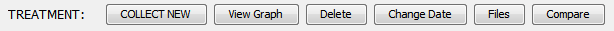

Configuration and Deployment
On this Page
Single-User Usage
The user can simply unzip the GPD distribution ZIP and run GPD.exe. In the program's default configuration, GPD stores data and preferences in the user's Application Data (aka AppData) folder.
Portable Mode
GPD can also run in "portable mode", in which it stores its data and configuration in a subdirectory of the GPD program folder. In this way, both the program and data can be moved or copied simply by moving or copying the GPD folder, for instance when keeping GPD on a memory stick.
To enable portable mode, edit the portable-mode.txt file in the program folder, and change the last line so that it reads portable-mode = true. When you run GPD, it will read the file and start in portable mode.
Note that data saved when running GPD in portable mode will not be available when running GPD in normal mode, and vice-versa – therefore, consider which method you prefer before running the program the first time and stick with it.
Multiple-User Deployment
To install GPD on a shared drive and have it be made available to multiple users, whether by file sharing or terminal services, the administrator should perform a few preliminary steps:
Unzip the GPD distribution into a shared drive. The administrator should have write permission to this location when he runs GPD for the first time; if necessary, right-click
GPD.exeand "Run as administrator" in step 2 below.Run
GPD.exe, enter the appropriate license information, and configure the program by adjusting preferences and templates.From the Preferences windows, select the
FileMenu→Export Preferencescommand, and save the resulting ZIP file asinitial-prefs.zipin theconfigsubfolder of the GPD program directory (in the same folder asgpd.config). By doing that, when a user runs GPD for the first time, his personal preferences and templates will take the value of those just exported.If necessary, edit
gpd.configto adjust users' configuration and data directories. By default, both configuration and treatment data are stored in various folders under${appdata}/GPD(where${appdata}represents the value of the user'sAPPDATAenvironment variable). If the administrator would prefer that each user store data somewhere else, he can edit the appropriate lines ingpd.config.Any environment variable can be used in the paths by enclosing it in curly brackets
${}. For instance, you can store each user’s preferences in a separate directory on a shared drive by using a path like:user-prefs = W:/GPD_Data/${USERNAME}/user/user.prefsand GPD will expand
${USERNAME}into the value of the%USERNAME%Windows environment variable.Edit
database.configandgui-config.xmlto make any changes desired for your environment (more info on these files given in the following sections).If you have configured GPD such that all users share a single database, you can allow users to quickly filter the patient list to see other users' patients by setting
allow-quick-user-patient-switching = trueingpd.config.Make the GPD program folder available to users, read-only if desired.
If you've upgraded through a number of GPD versions, your gpd.config file may not have all the latest properties or comments; however, in the reference subdirectory of your config directory, you'll find the latest revisions of all the default configuration files.
Updating
The ZIP distribution may be unpacked directly over an existing installation directory – no configuration information will be lost.
Alternatively, you can update GPD in-place by viewing the About dialog (Help Menu→About…) and clicking Check for Update. If an update is found, you can choose to download and install it automatically.
If you don’t have write access to the GPD directory, you can request that the updater run with Administrator privileges by checking the “Run updater with elevated privileges (UAC)” in the Preferences→General tab.
SQL Database Configuration
database.config, and the various files referenced from it, allow you to integrate GPD into your own SQL database system, if desired. In its default configuration, GPD will store textual and numeric information in its own local database, and binary data – files associated with patients or treatments, or data collected from devices – in the filesystem (as configured by the files-dir property in gpd.config). By setting
store-contents = truein database.config, GPD will also store the contents of all binary files in the SQL DB, and use the filesystem only as a cache.
Setting
store-contents=truewill also disable GPD's built-in database backup, normally controlled by thenum-backupsgpd.configproperty, since when the DB holds file contents it can grow quite large.
This is most useful if, rather than using GPD's default embedded DB, you configure GPD to interface with an existing DB server. As for how to do that...read on.
- Update: From version 5.5.6 onward, GPD has built-in support for MS SQL Server. See the comments in
database.configfor information on how to configure GPD to use SQL Server.
In the dbconf subdirectory of the GPD program folder, you'll find two main points of entry: the first is in the sql directory: these are the scripts that create the DB schema, define SQL stored procedures, and check that everything is in place each time the program is run. When GPD initializes its database connection, it will execute the script indicated by the check-db-setup-script property in database.config. That script in turn references the others that you find in the same folder.
The second point of entry is the hsqldb-mybatis-gpd.properties and hsqldb-mybatis-gpd-config.xml files in the dbconf\resources\com\elektrika\gpd \mybatis folder (and referenced by the mybatis-properties-resource and mybatis-config-resource settings in database.config). The former specifies the JDBC driver, connection URL, username, and password that will be used to make database connections, and the second configures the lightweight ORM (MyBatis) that GPD uses to interface with an SQL DB.
The SQL database that is shipped with GPD is HSQLDB, and the dialect of SQL used to write the default SQL scripts and mapper statements is very close to standard ANSI SQL.
And so, to adapt GPD to use your particular SQL DB:
Put the
.jarcontaining a JDBC driver for your SQL database into thelibdirectory of the GPD program folder.You can find a ZIP containing .jar for MS SQL that is compatible with GPD at this link. If you use integrated authentication, rather than a username and password, you'll also need to install the two DLLs somewhere on your system path
Make a new directory in
sqldirectory, next to thehsqldbfolder (let's call itMSSQLfor the purpose of this example), and copy all the.sqlfiles fromhsqldbintoMSSQL. You will not need to modify any of the programming commands (i.e. those that start with a*or\), but only the SQL statements themselves.Change
database.configto point to your new script:check-db-setup-script = dbconf/MSSQL/check-db-setup.sqlMake copies of the .xml and .properties files in
dbconf\resources\com\elektrika\gpd\mybatisand give them appropriate names. For instancehsqldb-gpd-mapper.xml → MSSQL-gpd-mapper.xml hsqldb-utility-mapper.xml → MSSQL-utility-mapper.xml hsqldb-mybatis-gpd.properties → MSSQL-gpd.properties hsqldb-mybatis-gpd-config.xml → MSSQL-gpd-config.xml
It's important to use new names for your modifications so that the files are not overwritten when GPD is updated to a new version. (And we're leaving them in the same directory so that we don't need to change the "namespace" settings of the mappers).
Adjust three lines in
MSSQL-gpd-config.xmlto refer to the other files you created (the first is a<properties/>element near the top of the file, and the other two are in<mapper/>elements near the bottom).Edit the JDBC properties in
MSSQL-gpd.propertiesto match the database and authentication parameters you want GPD to use. You probably will use a literal connection string as theurltemplateproperty, so no need to worry about the${database-dir}and${dbname}variables.Edit the SQL code in
MSSQL-gpd-mapper.xmlandMSSQL-utility-mapper.xmlto conform to the dialect used in your SQL system.Change
database.configto point to your new configuration:mybatis-config-resource = com/elektrika/gpd/mybatis/MSSQL-gpd-config.xml
Commentary on GPD's SQL Code
Most of the SQL used in GPD – both in the setup .sql scripts and the mapper XML files – is quite simple. The fragments enclosed in #{} are just variable substitutions that will be filled in at runtime, and can be left as-is, unless you need to fundamentally change the database schema. The only areas in the SQL code that may cause some difficulty are the stored procedures found in define-routines.sql and the MERGE statements in hsqldb-gpd-mapper.xml relating to storing file contents.
The routines are written in ISO standard SQL/PSM, but most databases do not support the standard directly, instead using their own individual dialect, like Oracle's PL/SQL or MS SQL Server's T-SQL. Most of the procedures should be straightforward to translate, though do take note of the various GET_PATIENT and GET_TREATMENT procedures, which use database cursors to return multiple result sets.
In case your database doesn't support MERGE, there are two example procedures given at the end of define-routines.sql that show how the MERGE mappings could be implemented as stored procedures.
If you would like to integrate support for a new database into GPD, contact me at GPD@elektrika-inc.com and we can collaborate to make it work.
Customizing the UI
In gpd.config, the property gui-config indicates an XML file, by default gui-config.xml that allows you to customize certain aspects of the user interface – currently, the button bars on both the patient and treatment list screens.
The default configuration XML is given below, along with the two resulting button bars for the treatment list and patient list, respectively. The <label> element is optional, and each <button-bar> can have as many <button> elements as you would like, though the screen size of the window imposes a practical limit. The text attribute of each <button> specifies what text appears on the button, and the action attribute corresponds to the menu item whose action you want the button to perform. The action can be upper- or lowercase, and you can leave out the ellipses "..." for menu items (like Patient Files... in the Patient menu) that have them.
Making a custom button bar is useful for putting commonly used commands directly in front of the user, and can also provide for using your own clearer terminology for certain actions – for instance, you could create a button named "Transmit to Server" that would invoke the "SEND TREATMENT VIA MLLP" action.
Default gui-config.xml:
<GPD>
<treatment-list>
<button-bar>
<label text="TREATMENT:" />
<button text="COLLECT NEW" action="COLLECT NEW TREATMENT" />
<button text="View Graph" action="VIEW GRAPH" />
<button text="Delete" action="DELETE TREATMENT" />
<button text="Change Date" action="CHANGE DATE" />
<button text="Files" action="ASSOCIATED FILES" />
<button text="Compare" action="COMPARE TREATMENTS" />
</button-bar>
</treatment-list>
<patient-list>
<button-bar>
<label text="PATIENT:" />
<button text="New" action="NEW PATIENT" />
<button text="Delete" action="DELETE PATIENT" />
<button text="View Treatments" action="VIEW TREATMENTS" />
<button text="Collect New Treatment" action="COLLECT NEW TREATMENT" />
<button text="Files" action="PATIENT FILES" />
</button-bar>
</patient-list>
</GPD>Resulting button bars:
